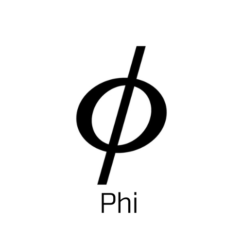

PhiVerse
Phiとは？
Phi,ギリシャ文字で表すと"Φ"となり、Oの真ん中に串をさした感じである。 肉団子とかお団子などに似ていて美味しそうなのは置いといて... こいつは「オイラーの関数」や、円の「直径」に用いられているらしい。 しかし、こいつにはもっと熱い意味が込められていた（？） そう、黄金比である。 そもそも黄金比ってなんぞや？って思っているそこのあなた。 それは、人間が最も美しいと思う比率のことらしい... 俺は、そのような存在になるために、この名前にした。 え？厨二病みたいだって？ 大丈夫...もう手遅れだから...
